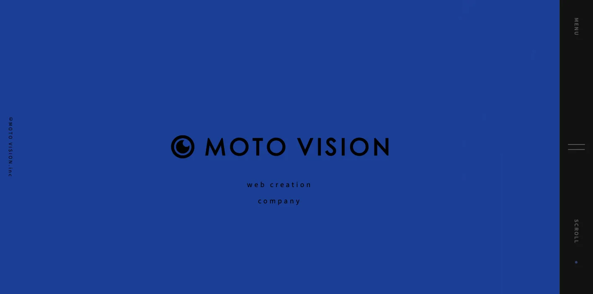
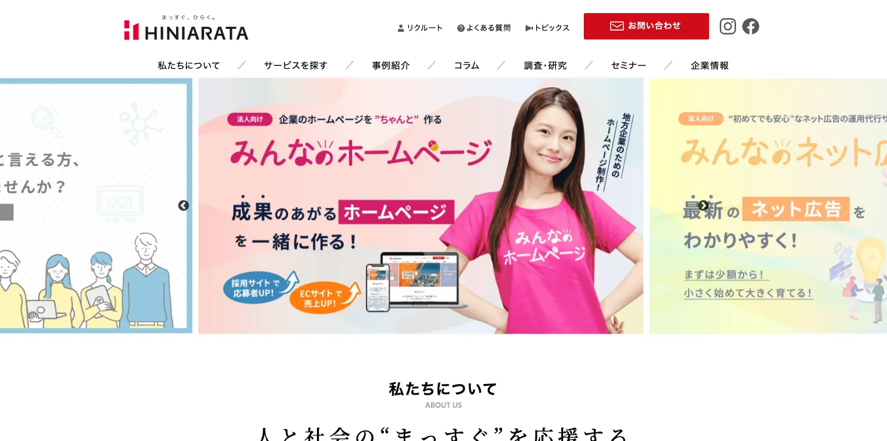
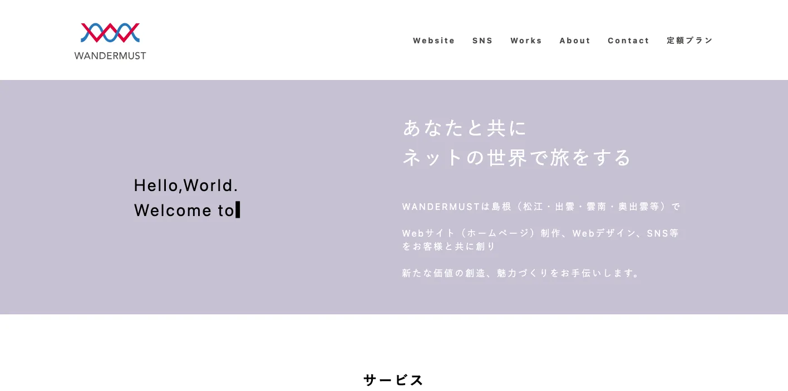
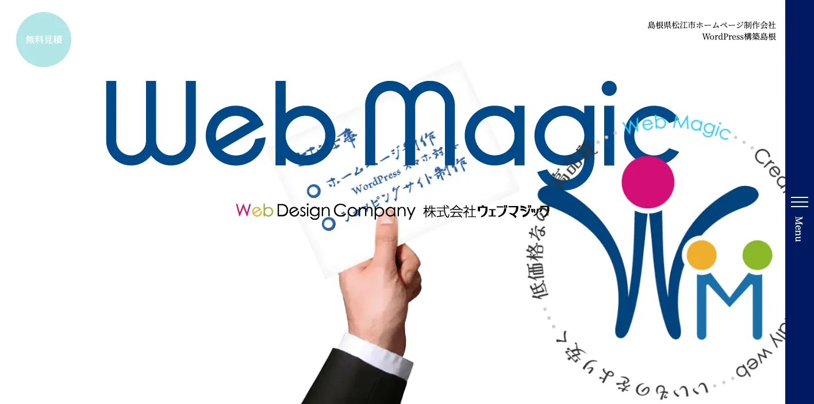
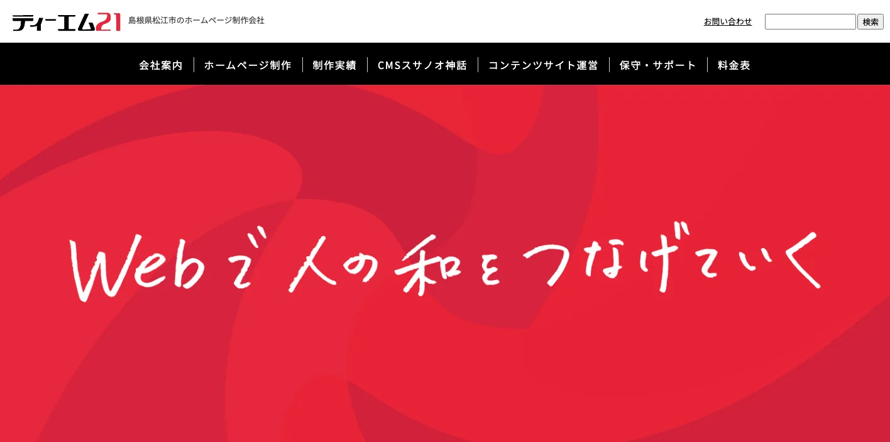
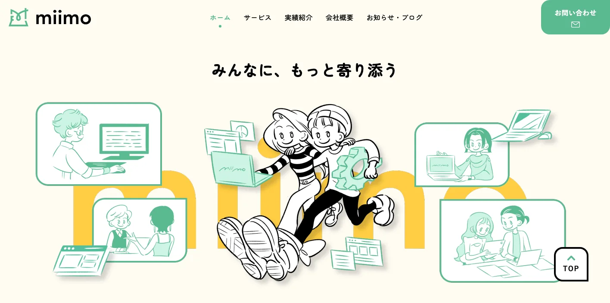
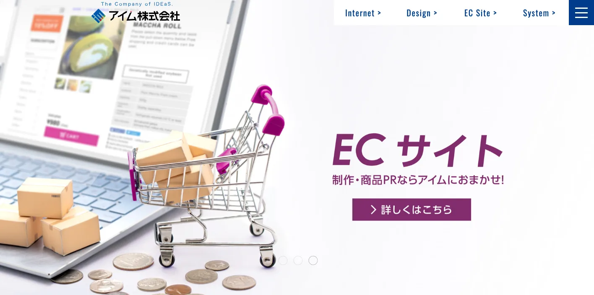
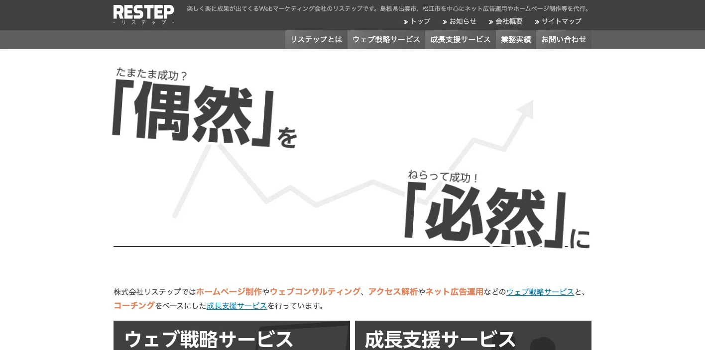
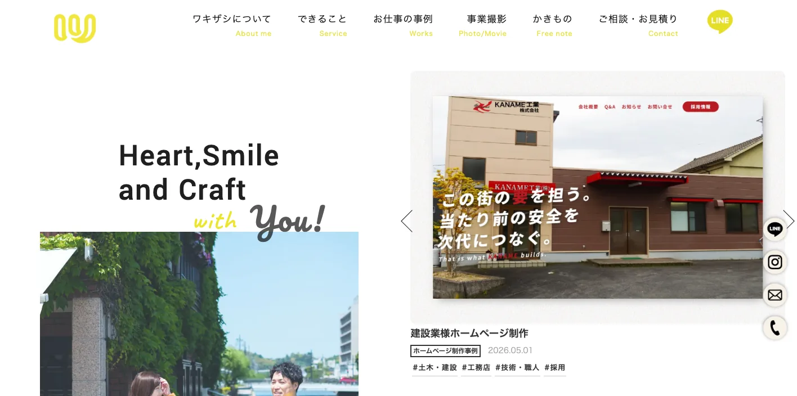
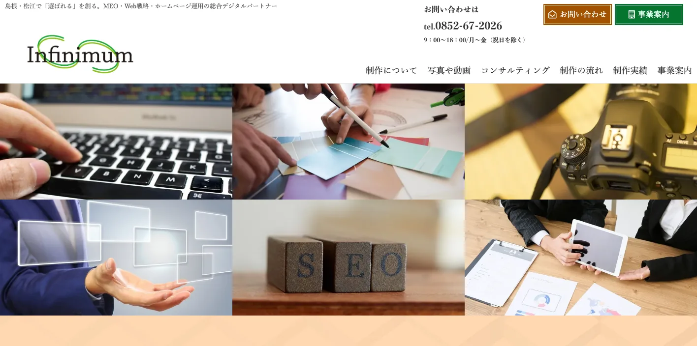

島根県でおすすめのLLMO会社10選｜費用相場と選び方もわかりやすく解説

島根県でLLMO会社を選ぶときは、「松江のホームページ制作会社」だけで探すと判断が足りません。松江市は行政、教育、医療、観光、企業広報が集まり、出雲市は出雲大社を中心に観光、宿泊、飲食、土産、交通の質問が増えます。安来市、雲南市、奥出雲町は製造業、たたら文化、農産品、地域観光が重なり、浜田市、益田市、大田市、津和野町、隠岐では移動距離と観光導線も重要になります。
島根県統計調査課の最新の主要指標では、令和8年3月1日現在の推計人口が629,808人と示されています。一方、令和6年島根県観光動態調査結果では、観光入込客延べ数が29,860千人地点とされ、印刷用報告書では出雲市11,718,457人地点、松江市8,734,817人地点、出雲大社6,982,000人地点などの大きな観光接点も確認できます。人口規模だけでなく、観光、文化、製造、広域移動を前提に情報設計する必要があります。
この記事では、島根県でLLMOに取り組むときに比較したい会社、選び方、費用相場をまとめます。基礎から確認したい方はLLMO対策の基礎記事、BtoBの比較軸を見たい方はBtoBに強いLLMO会社の記事、隣県商圏も見たい方は鳥取県の比較記事も参考にしてください。
目次

島根県でおすすめのLLMO会社10選
今回は、島根県内に拠点があり、Web制作、SEO、Webマーケティング、広告、SNS、広報、ブランディング、写真・映像、システム、運用保守などの公開情報を確認しやすい会社を中心に選びました。島根県内でLLMO専業を前面に出す会社はまだ多くありません。そのため、AIに引用されやすい情報設計、FAQ、構造化データ、SEO、取材、更新運用まで広げて支援できるかを見ています。
島根県では、松江の行政・教育・医療、出雲の観光・宿泊・飲食、安来・雲南・奥出雲の製造と文化、石見の広域観光、隠岐の離島情報で、AIに聞かれる質問が変わります。まずは下の表で、自社の地域と目的に近い会社を絞ってください。
| 会社名 | 拠点・対応 | 向いている相談 |
|---|---|---|
| 株式会社MOTO VISION | 松江市 | ホームページ制作、SEO、ネット広告、ブランディング、写真・動画 |
| 株式会社ヒニアラタ | 出雲市・松江市 | Webマーケティング、ホームページ制作、ネット広告、研修、システム |
| WANDERMUST | 松江市・出雲市・雲南市など | Web制作、SNS運用、写真・映像、ライブ配信、広報支援 |
| 株式会社ウェブマジック | 松江市 | WordPress、CMS、ネットショップ、保守、低価格プラン |
| 株式会社ティーエム21 | 松江市 | 自治体・教育・医療・福祉・製造、独自CMS、SEO、SNS、広告 |
| miimo Co., Ltd. | 松江市 | Webサイト制作、Webシステム、予約機能、運用保守 |
| アイム株式会社 | 松江市 | Webマーケティング、EC、SNS、広告、解析、デザイン、システム |
| 株式会社リステップ | 出雲市 | Webコンサルティング、アクセス解析、ネット広告、戦略的Webサイト |
| 株式会社ワキザシ | 松江市 | Web制作、ブランディング、写真・映像、AI導入サポート |
| 株式会社インフィニマム | 松江市 | MEO、Web戦略、ホームページ運用、Web制作、ローカル集客 |
株式会社AIMAは島根県内の会社ではありませんが、全国対応でLLMO支援を提供しています。月額5万円のLLMO支援は初期費用なし・1ヶ月単位で始められ、質問設計、記事制作、引用チェックに絞って実務を進められます。松江市、出雲市、安来市、雲南市、浜田市、益田市、隠岐のように商圏や観光導線が分かれる場合も、まず無料LLMO診断で優先順位を確認できます。
株式会社MOTO VISION

株式会社MOTO VISIONは、松江市を拠点にホームページ制作、ロゴデザイン、印刷物制作、ネット広告代理運用、SEO対策、ブランディング、写真撮影、動画制作を提供する会社です。公式サイトでは、ホームページ制作やロゴ、印刷物、写真、動画を含むクリエイティブサービスをワンストップで提供することを案内しています。
LLMOでは、会社の強み、商品、実績、地域で選ばれる理由をAIが読み取れる形に整理する必要があります。MOTO VISIONはブランディングと制作物をまとめて扱えるため、松江市、安来市、出雲市周辺の店舗、士業、医療、住宅、採用サイトで、見た目と情報整理を同時に進めたい会社に向いています。
株式会社ヒニアラタ

株式会社ヒニアラタは、出雲市に本社を置き、松江市にも拠点を持つWeb活用の専門会社です。公式サイトでは、官公庁や民間企業を対象に、ホームページ制作、Webマーケティング支援、ネット広告運用、システム開発、教育・研修をワンストップで提供すると説明しています。
島根県では、出雲大社、神社仏閣、観光、公共団体、地域企業の情報がAI回答に出やすくなります。ヒニアラタはWebマーケティングと教育・研修を含めて相談しやすいため、出雲市、松江市、県内団体、観光関連、採用広報で、社内運用まで含めてLLMOを進めたい場合に候補になります。
WANDERMUST

WANDERMUSTは、松江市、出雲市、雲南市、奥出雲町などを対象に、Webサイト制作、Webデザイン、SNS運用、Web活用アドバイス、広報代行、写真・映像、ライブ配信を提供する事業所です。公式サイトでは、広告代理店での経験や官公庁から中小企業までのWeb制作・管理経験も紹介されています。
LLMOでは、公式サイトだけでなく、SNS、写真、動画、地域イベント情報がAIの説明材料になります。WANDERMUSTは地域広報や映像・写真を含めて相談できるため、雲南、奥出雲、松江、出雲の観光、イベント、地元店舗、農産品、地域団体の情報発信に向いています。
株式会社ウェブマジック

株式会社ウェブマジックは、松江市のホームページ制作会社です。公式サイトでは、WordPress構築、CMS構築、テンプレート、ネットショップ制作、保守、スマートフォン対応、ドメイン・サーバー相談を案内しています。低価格で高品質、ご予算や運用用途に合わせた制作プランを用意している点も特徴です。
LLMOでは、Webサイトを作ったあとに情報を更新できる状態が重要です。ウェブマジックはWordPressや保守セット、ネットショップ制作に対応しているため、松江市周辺の店舗、サービス業、教室、団体、EC事業者が、FAQや商品情報を継続して増やしたい場合に合います。
株式会社ティーエム21

株式会社ティーエム21は、松江市を拠点にホームページ制作を行う会社です。公式サイトでは、2001年の創業以来、島根県・鳥取県を中心に1,000件以上のホームページ制作実績があること、自治体、行政、教育、医療、福祉、建設、製造など幅広い業種に対応していることを案内しています。
同社は独自CMS「スサノオ神話」による運用支援、アクセシビリティ、アクセス解析、SEO、SNS運用、Web広告運用にも触れています。島根県のLLMOでは、自治体や公共性の高い団体、医療、福祉、学校、製造業のように、正確で更新しやすい情報が必要なサイトで候補になります。
miimo Co., Ltd.

miimo Co., Ltd.は、松江市を拠点にWebサイト制作などを行う会社です。公式サイトでは、CMSを利用した更新性の高いWebサイト制作、Webシステム開発、データベース連動の入力システム、WordPressプラグイン開発、Web予約機能、運用・保守を提供すると案内しています。
島根県では、宿泊、飲食、医療、教室、美容、体験予約など、Web上で空き状況や予約導線を分かりやすく出すべき業種が多くあります。miimoは制作とシステム、運用保守を組み合わせられるため、AIに説明される前提のFAQや予約情報を整えたい小規模事業者に向いています。
アイム株式会社

アイム株式会社は、松江市北陵町にあるWebマーケティング、デザイン、ITシステムの会社です。公式サイトでは、Web集客支援、ECサイト構築、SNS戦略設計、SNS運用管理、Web広告運用、Web解析診断、広告・デザイン制作、動画制作、Webリニューアル、システム導入管理などを案内しています。
同社の実績には、島根県の観光プロモーション、観光マップ、文化圏、大学、団体など地域性の強い案件も見られます。LLMOでは、観光、文化、採用、地域ブランド、EC、SNS、紙媒体を横断して情報をそろえる必要があるため、松江や出雲の広報・観光・地域ブランド案件で候補になります。
株式会社リステップ

株式会社リステップは、出雲市を拠点にホームページ制作、Webコンサルティング、アクセス解析、ネット広告運用などを提供するWebマーケティング会社です。公式サイトでは、島根県の松江、浜田、出雲、益田、大田、安来、江津、雲南などを無料訪問相談可能エリアとして挙げています。
LLMOは、記事を作るだけでなく、どの質問で表示されたいかを決め、アクセス解析や広告、問い合わせ導線と合わせて改善する必要があります。リステップはWeb戦略、解析、広告運用を扱うため、出雲市周辺の店舗、サービス業、士業、BtoB企業が、成果を見ながら改善したい場合に向いています。
株式会社ワキザシ

株式会社ワキザシは、松江市を拠点にホームページ制作、グラフィック制作、ライティング、キャッチコピー、写真・映像、ブランディング、AIサービス導入サポートを提供する会社です。公式サイトでは、松江市・出雲市・米子市・安来市などの実績エリアを示し、採用や建設、学校、地域、放送、商品パッケージなどの制作事例も紹介しています。
LLMOでは、AIに拾われる文章だけでなく、会社の雰囲気、代表の考え、採用の魅力、商品写真、地域での活動をまとめる必要があります。ワキザシはブランド、写真、映像、AI導入支援まで扱うため、採用に困っている会社、建設業、農林水産、地域事業者、広報を整えたい企業に合います。
株式会社インフィニマム

株式会社インフィニマムは、松江市を拠点にMEO、Web戦略、ホームページ運用、Web制作を提供する会社です。公式サイトでは、「必要な情報を探している人にしっかり届けること」を重視し、単なるホームページ制作ではなく、認知され、つながり、選ばれるためのWeb支援を案内しています。
地域ビジネスでは、「地域名＋サービス名」で見つけてもらうページ設計と、Googleマップ上の情報整備が欠かせません。インフィニマムはMEOとWeb戦略を前面に出しているため、松江市周辺の店舗、クリニック、士業、住宅、地域サービスが、MEOとLLMOを一緒に整えたい場合に向いています。
島根県のLLMO会社を比較する際のポイント
ここでは、会社一覧とは別に、島根県でLLMO会社を選ぶときの見方を整理します。島根県は「人口が少ない地方」とだけ見ると失敗します。松江、出雲、安来・雲南・奥出雲、石見、隠岐では、AIに聞かれる質問がかなり違います。
松江市は行政・教育・医療・企業広報の正確性を見る
松江市は県庁所在地で、行政、大学、教育、医療、士業、企業広報、観光が集まります。AIに聞かれる質問も「松江でおすすめ」だけでなく、「公式情報はどこか」「アクセスはどうか」「相談先はどこか」「採用しているか」「公共案件の実績があるか」のように分かれます。
この地域では、デザインの見た目だけでなく、組織情報、サービス、料金、実績、FAQ、採用、問い合わせ導線を正確に整理できる会社が合います。自治体、学校、医療福祉、士業、BtoB企業は、古い情報や曖昧な表現がAIに拾われると誤解が広がるため、更新体制も確認してください。
出雲市は出雲大社、宿泊、飲食、交通の質問を分ける
出雲市は出雲大社を中心に、観光、宿泊、飲食、土産、交通、体験、神社仏閣の質問が増えます。AIは「出雲大社から近い宿」「雨の日の観光」「日帰りで回れるか」「松江と出雲を一日で行けるか」「子ども連れ」「外国人対応」のように、具体的な条件で答えを作ろうとします。
観光事業者は、施設紹介だけでは足りません。アクセス、所要時間、駐車場、予約、混雑、季節、周辺観光、モデルコース、写真、よくある質問を公式ページに出す必要があります。LLMO会社には、観光パンフレットの文章をそのまま載せるのではなく、AIに聞かれる質問へ直せるかを見ましょう。
特に出雲では、県外客が「出雲大社だけ行く」のか、「松江、玉造温泉、石見銀山、隠岐まで組み合わせる」のかで必要な情報が変わります。日帰り、1泊2日、車あり、公共交通のみ、家族連れ、外国人旅行者など、条件別の回答を公式サイト側で先に用意しておくと、AIが説明を作りやすくなります。
安来・雲南・奥出雲は製造、農産品、たたら文化を説明する
安来市、雲南市、奥出雲町では、製造業、農産品、たたら文化、工芸、地域観光が重なります。製造業では「何を作れるか」「どの素材に対応できるか」「納期はどれくらいか」「小ロットは可能か」、農産品では「旬」「保存方法」「ギフト対応」「発送条件」がAIに聞かれやすくなります。
この地域のLLMOでは、会社概要だけでなく、設備、加工範囲、品質管理、認証、事例、商品ページ、FAQを出すことが大切です。地域文化や観光を扱う場合は、由来、見学可否、体験予約、アクセス、周辺施設を一次情報として整える必要があります。
BtoB企業の場合、地域名だけでなく、技術名、素材名、設備名、対応ロット、検査体制、相談の流れまで書く必要があります。AIは「島根で加工できる会社」のような大きい質問だけでなく、「小ロットで相談できるか」「試作だけ頼めるか」「県外から発注できるか」まで答えようとするため、営業資料にしかない情報をWebに移すことが重要です。
石見・隠岐は移動距離、季節、予約条件を明確にする
石見銀山、津和野、浜田、益田、江津、隠岐は、松江・出雲からの移動距離があり、交通手段や季節で体験が変わります。AIには「車なしで行けるか」「何泊必要か」「フェリーは必要か」「雨の日はどうするか」「冬でも行けるか」「子連れで大丈夫か」といった質問が入りやすいです。
観光、宿泊、体験、飲食の事業者は、営業時間や料金だけでなく、移動時間、予約条件、キャンセル、服装、周辺観光、緊急時の連絡先まで整理してください。離島や中山間地域では、情報が古いと来訪前の不安が大きくなるため、更新頻度を保てる会社を選ぶことが重要です。
採用と移住は会社の空気が伝わる一次情報を増やす
島根県では、採用、移住、Uターン、Iターンに関する質問も重要です。AIは求人票の条件だけでなく、「どんな人が働いているか」「未経験でも働けるか」「地域での暮らしはどうか」「家族で移住できるか」のような情報を組み合わせて回答します。
採用にLLMOを使うなら、代表メッセージ、社員インタビュー、1日の流れ、教育体制、福利厚生、地域での暮らし、写真、動画を用意しましょう。制作会社を選ぶときは、求人ページだけでなく、会社の考えや現場の雰囲気を取材して言語化できるかを確認してください。
移住やUターン採用では、仕事の条件だけでなく、住まい、通勤、子育て、地域行事、休日の過ごし方も不安材料になります。企業側が「働く場所としての島根」を丁寧に説明できると、AIが求人比較を作るときにも、給与以外の魅力を拾いやすくなります。
島根県のLLMO会社に依頼する費用相場
島根県でLLMO対策を依頼する費用は、既存サイトの状態、取材や撮影の有無、記事本数、SEOや広告運用の範囲、予約やECなどのシステム有無で変わります。ここでは、最初に見ておきたい価格帯を整理します。
見積もりでは、単純なページ数だけでなく「松江の生活サービス」「出雲の観光」「安来・雲南の製造」「石見・隠岐の移動情報」のどこまで扱うかを確認してください。地域ごとの質問が違うため、同じ10ページでも必要な取材量と整理する情報量は変わります。
月5万〜15万円：既存ページ改善、FAQ、記事制作
月5万〜15万円の範囲では、既存ページの改善、FAQ追加、コラム制作、内部リンク、構造化データの見直し、簡単な競合調査が中心になります。松江市、出雲市の小規模店舗、士業、クリニック、宿泊施設、地域ECなら、まずこの価格帯から始めるケースが現実的です。
安く始める場合でも、記事だけを納品して終わる会社は避けたほうが安全です。島根県では、地名、観光地名、文化資源、商品名、交通条件の組み合わせが多いため、記事とサービスページ、商品ページ、アクセス情報、Googleビジネスプロフィールをつなげる設計が必要です。
月15万〜30万円：SEO、MEO、LLMO、広告、分析をまとめて改善
月15万〜30万円になると、SEO、MEO、LLMO、広告、アクセス解析、競合調査、コンテンツ改善を一体で進めやすくなります。松江・出雲で複数拠点を持つ会社、観光施設、採用に困っている企業、BtoB製造業、食品ECでは、この価格帯のほうが進めやすいことがあります。
この段階では、AI回答だけでなく、問い合わせ、予約、資料請求、採用応募、EC売上、マップ経由の来店まで見ます。島根県は移動距離が長く、県外観光客や山陰広域の比較も多いため、アクセス、対応エリア、配送、予約情報も含めて改善してください。
この価格帯で依頼するなら、月次レポートに「順位」だけでなく「どの質問に答えるページが増えたか」「AI回答で誤解されそうな情報がないか」「問い合わせにつながる導線が弱くないか」を入れてもらうと実務に使いやすくなります。松江と出雲、石見と隠岐では見るべき質問が違うため、地域別に確認するのが安全です。
30万円〜数百万円：サイト制作、撮影、動画、EC、多言語まで含む場合
ホームページを作り直す、写真撮影や動画制作を入れる、ECを作る、予約システムを入れる、観光情報を多言語化する場合は、初期費用が30万円から数百万円になることがあります。出雲大社、松江城、玉造温泉、石見銀山、隠岐、地場食品、製造業採用サイトではこの規模になりやすいです。
費用が大きい場合は、見積もりを「ページ数」だけで見ないでください。必要なのは、AIに引用される一次情報です。写真、実績、料金、FAQ、モデルコース、配送条件、加工範囲、採用情報など、どの情報を新しく作るのかを確認しましょう。公開後の更新費、撮影費、広告費、解析レポート費も分けて見ると判断しやすくなります。
島根県のLLMO会社に関するよくある質問
島根県内の会社に依頼したほうがいいですか？
対面取材、写真撮影、観光や地元企業の文脈整理が必要なら県内会社は強いです。一方で、AI検索でどう引用されるかの診断、FAQ設計、構造化データ、記事改善は県外のLLMO専門会社を組み合わせても問題ありません。
松江市と出雲市ではLLMOの進め方は変わりますか？
変わります。松江市は行政、教育、医療、企業広報、松江城周辺の観光が強く、出雲市は出雲大社、宿泊、飲食、交通、土産、神社仏閣の質問が増えます。地域ごとにAIに聞かれる言葉を分ける必要があります。
観光業でもLLMOは必要ですか？
必要です。出雲大社、松江城、玉造温泉、足立美術館、石見銀山、津和野、隠岐などでは、行き方、所要時間、季節、天候、家族連れ、外国人対応、周辺観光をAIに聞かれやすいです。公式サイトに最新の一次情報を整理すると、AI回答に使われやすくなります。
製造業やBtoB企業にも効果がありますか？
あります。安来、雲南、奥出雲、松江、出雲周辺の製造業では、設備、加工範囲、素材、品質管理、納期、事例をWebに出すことで、AIが対応できる会社を説明しやすくなります。営業資料だけにある情報を公式サイトにも出すことが重要です。
隠岐や石見の会社でも対応できますか？
対応できます。ただし、移動距離、船や飛行機、季節、予約条件など、都市部よりも説明すべき情報が多くなります。現地取材が必要な部分は県内会社、AI検索や構成改善は全国対応会社という分担も現実的です。
MEO対策とLLMO対策は何が違いますか？
MEOはGoogleマップで見つけてもらう対策です。LLMOはChatGPTやAI Overviewなどの回答で、自社情報を正しく引用・参照してもらう対策です。店舗、宿泊、飲食、クリニック、士業では、MEOとLLMOを同時に整えるのが効率的です。
島根県のLLMO対策の費用はどれくらいですか？
小さく始めるなら月5万〜15万円、本格的な改善なら月15万〜30万円以上が目安です。サイト制作、写真撮影、動画、EC、多言語、予約システム、採用ページまで含めると、初期費用が数十万円から数百万円になることもあります。
最初に何を相談すればいいですか？
まず「AIに何と聞かれたときに出たいか」を10個書き出してください。松江の生活サービス、出雲の観光、安来の製造、石見銀山の旅行、隠岐の移動、採用や移住など、地域と質問をセットで整理すると必要なページが見えます。
島根県でLLMO会社を選ぶなら、松江・出雲・石見・隠岐を同じ言葉でまとめない
島根県でLLMO会社を選ぶときは、松江市の行政・教育・医療、出雲市の観光・宿泊・飲食、安来・雲南・奥出雲の製造と文化、浜田・益田・大田・津和野の石見観光、隠岐の離島情報を同じ言葉でまとめないことが重要です。AIは、地域名、目的、条件、一次情報が具体的なほど回答を作りやすくなります。
まずは、自社がAIに聞かれたい質問を10個書き出してください。次に、その質問に答える公式ページ、FAQ、実績、料金、会社概要、写真、アクセス、配送、予約、採用情報があるかを確認します。足りない情報が多ければWeb制作や取材に強い会社、既存サイトがあるならSEO/LLMO改善に強い会社を選ぶのが現実的です。
島根県内の会社だけで完結する必要はありません。地域取材や撮影は地元会社、LLMO診断や記事改善は専門会社という分担もできます。小さく始めたい場合は、AIMAのLLMO支援サービスや無料診断も使い、どの質問から対策すべきかを先に整理してください。